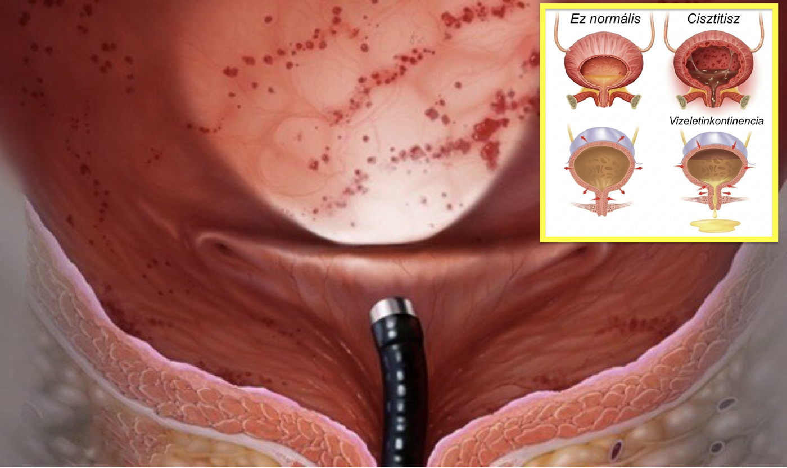
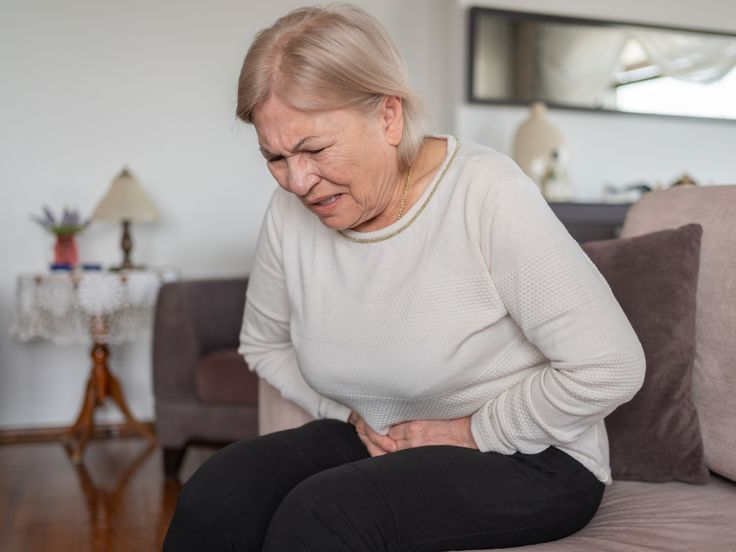
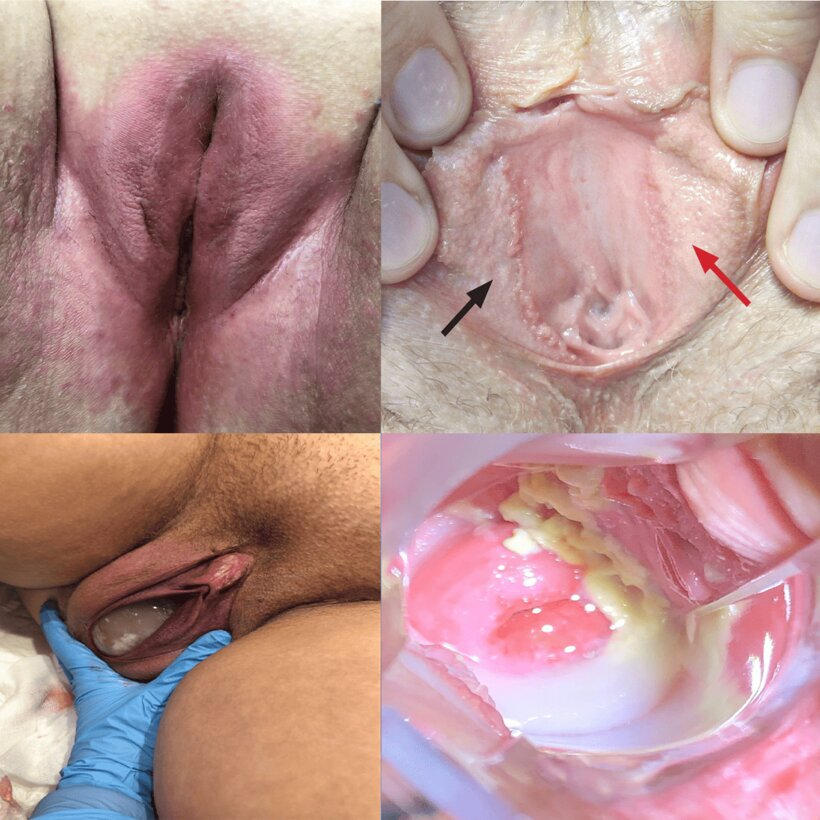
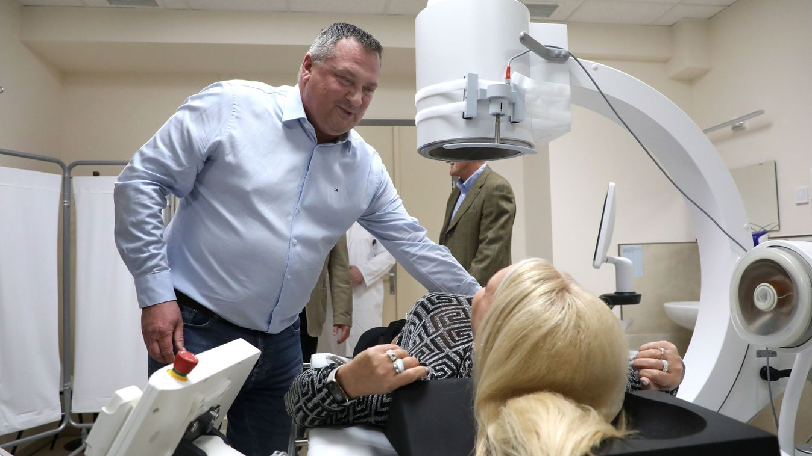
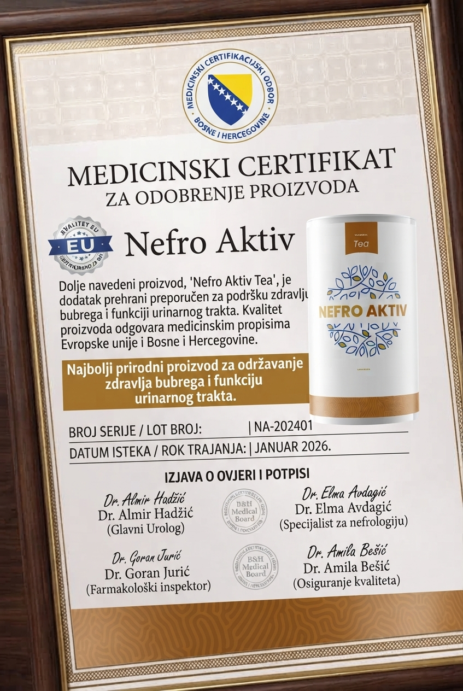

Magyarország vészhelyzetben van: ellenőrizhetetlenné vált a visszatérő hólyaggyulladás és a vizeletszivárgás terjedése a nők körében. Az eddig figyelmen kívül hagyott enyhe tünetek – mint a gyakori vizelési inger, az enyhe égő érzés vagy a köhögésnél jelentkező pár csepp szivárgás – valójában korai jelei annak, hogy felborult a húgyúti mikroflóra, a rossz baktériumok elszaporodtak, és a hólyag fala krónikus gyulladásban van. Ez a keserű valóság azok számára, akik túl későn ismerik fel a fenyegetést.
Ez a helyzet komoly kihívást jelent Magyarország vezető urológus-nőgyógyásza, Dr. Lopes-Szabó számára, aki egész életét a visszatérő húgyúti gyulladások és a vizelet-inkontinencia természetes kezelésének szentelte. Páciensei között hétköznapi nők és közéleti szereplők egyaránt megtalálhatók.
A doktornő ritkán szerepel a médiában, mert inkább a betegekre és az innovatív húgyúti módszerének tökéletesítésére összpontosít. Nekünk azonban sikerült megszerezni a módszerét, amely nemcsak megfékezi a gyulladást, hanem természetes módon helyreállítja a húgyúti mikroflórát, regenerálja a hólyag falát, és visszaadja a kismedencei izmok tartását is.
Dr. Lopes-Szabó: „Napjainkban egyre súlyosabb válság bontakozik ki a visszatérő hólyaggyulladás és a vizelet-inkontinencia miatt. A legnagyobb problémát a felborult húgyúti mikroflóra és a krónikus gyulladás rejti – a hólyag fala akár évekig észrevétlenül károsodhat, amíg a szivárgás és a fájdalom uralhatatlanná nem válik.”
Ezért fejlesztettük ki a leghatékonyabb és legbiztonságosabb módszert a húgyutak egyensúlyának természetes helyreállítására otthoni körülmények között
Küldetésünk a húgyúti mikroflóra helyreállítása és a hólyag falának regenerálása – ezután megszűnik az égő érzés, abbamarad a szivárgás, és a visszatérő gyulladás sem jön újra!
Dr. Lopes-Szabó biztos abban, hogy bármelyik nő rendbe hozhatja a húgyutait otthon, veszélyes vegyszerek vagy drága klinikai kezelések nélkül.
A gyógyszertári készítményekkel ellentétben, amelyek gyakran csak elnyomják a tüneteket, Dr. Lopes-Szabó módszere ritka természetes összetevőket használ, amelyek kombinációja megfékezi a gyulladást okozó baktériumokat és regenerálja a hólyag falát anélkül, hogy károsítaná a szervezetet.
Dr. Lopes-Szabó:
— Tényleg elhiszi, hogy az antibiotikumok és a betétek képesek megszüntetni a visszatérő hólyaggyulladást? Ez végzetes tévedés! Az antibiotikum mellékhatásai tönkreteszik a húgyúti mikroflórát, és minden kúra után a rossz baktériumok még erősebben térnek vissza. Ön csak elnyomja a tüneteket, miközben a valódi probléma – a felborult mikroflóra és a gyulladt hólyagfal – tovább romlik!
És a legnagyobb gond a hólyag nyálkahártyájában van! Mivel a gyulladás kezdetben tompán jelentkezik, a károsodás évekig tarthat észrevétlenül. Legalább minden harmadik magyar nő húgyhólyagja már krónikusan gyulladt — ez egy időzített bomba! A károsodás rejtve maradhat, amíg végül állandó szivárgáshoz és visszatarthatatlan ingerhez nem vezet. Ezen a ponton már csak drága műtétet kínálnak — ami csak elfedi a tünetet.
Nézze meg ezt a képet — egy súlyosan gyulladt, károsodott húgyhólyag. A beteg semmit sem sejtett, amíg már túl késő volt. Ilyen állapotban már nehéz természetes úton helyreállítani a húgyutakat. Ha most nem cselekszik, bármelyik pillanat lehet az utolsó lehetőség!
A statisztikai adatok szerint 5 magyar nőből 4 tapasztal valamilyen húgyúti panaszt, amelynek oka a felborult húgyúti mikroflóra vagy a hólyag krónikus gyulladása.
Az égő érzés, a gyakori vizelés és a szivárgás tünetei gyakran csak akkor erősödnek fel, amikor a gyulladás már krónikussá vált, és a húgyutak helyreállítása sokkal nehezebb.
Dr. Lopes-Szabó:
— Gondoljon csak bele! Néhány hónap alatt a hólyag fala súlyosan begyulladhat, a kismedence izmai pedig teljesen ellazulhatnak! A szervezet elveszíti a vizelet visszatartásának képességét, a hólyag állandóan ingerelt állapotba kerül – ez állandó szivárgást, kellemetlen szagot, álmatlanságot és akár szorongást is okozhat! A húgyúti egyensúly felborul, és ha nem történik változás, 10 nőből több mint 7 véglegesen együtt él a szivárgással és a visszatérő gyulladással.
És mit kínál az orvostudomány megoldásként? Újabb antibiotikum-kúrákat és drága műtéteket! De gondolja végig — ezek csupán tüneti megoldások, és nem állítják helyre a húgyúti mikroflórát természetes módon. Ezek gyakran kockázatosak, nem mindenki számára működnek, és még így sem akadályozzák meg a gyulladás visszatérését!

Fontos tény, amit tudnia kell: az antibiotikum-kúra befejezése után 10-ből 9 esetben a gyulladás 2–3 hónapon belül visszatér. Ez a beavatkozás nemcsak kockázatos, hanem csupán ideiglenes megoldás, amely nem állítja helyre a húgyúti mikroflórát!
— Ha most ezeknek a tüneteknek bármelyikét tapasztalja, nincs sok ideje! Meddig bírja még? A válasz attól függ, mennyi ideje hagyja ezeket a tüneteket kezeletlenül! Az elmúlt években világszerte több tízezer nő került súlyos, krónikus húgyúti gyulladás miatt szakorvoshoz — és sokuknál visszafordíthatatlanná vált a hólyag károsodása. A kezdeti szakaszban a panasz enyhének tűnik, de idővel komoly húgyúti problémákhoz vezethet!
Ezért rendkívül fontos a tünetek korai felismerése, hogy még időben léphessen!
Ha akár csak 1 vagy 2 tünetet is felismer ebből a listából, azonnal cselekedjen! Ne várja meg, míg túl késő lesz! A visszatérő gyulladás elleni küzdelem csak időben elkezdett helyreállítással lehet hatékony. Ha tovább halogatja, akkor állandó vizeletszivárgás, kínzó égő érzés, szociális elszigetelődés, krónikus medencefájdalom, alvászavar, szorongás vagy akár kockázatos műtét is várhat Önre!
Nézze meg ezeket a képeket — így járnak azok, akik figyelmen kívül hagyják az első jeleket. Ezeket a nőket csak tüneti kezeléssel látták el — az orvosok nem az okot kezelték: a felborult húgyúti mikroflórát és a gyulladt hólyagfalat. Ennek következtében mindannyian maradandó húgyúti panaszokkal élnek. Ön is ezt szeretné?


A visszatérő gyulladás nap mint nap pusztítja a hólyag falát anélkül, hogy észrevenné! Nők ezreinél alakul ki szociális elszigetelődés, állandó szivárgás, krónikus medencefájdalom. És ami a legveszélyesebb — a húgyúti panaszok valódi okát rendkívül nehezen ismerik fel! Az esetek 99%-ában az orvosok csak antibiotikumot írnak fel, vagy „normálisnak” minősítik a panaszt.
Dr. Lopes-Szabó:
— Mindenki azt gondolja: „ez velem nem történhet meg”. A valóság viszont az, hogy a nők több mint 90%-a csak azért él hosszú éveken át a szivárgással és a visszatérő gyulladással, mert nem ismerik fel időben a valódi okot, és nem lépnek időben, amikor még jól kezelhető lenne. A gyulladás csendben fejlődik ki — ha figyelmen kívül hagyjuk a tüneteket, azzal saját életminőségünket tesszük tönkre.
Gondolja át komolyan! Ha már tapasztalja a tüneteket, az ideje lejáróban van! Olyan megoldásra van szüksége, amely gyors és hatékony! Ne higgyen azoknak, akik azt mondják, „ez csak természetes, együtt kell élni vele” — a nők 59%-a szenved visszatérő hólyaggyulladástól, felborult húgyúti mikroflórától, állandó szivárgástól és kínzó kismedencei panaszoktól!
Dr. Lopes-Szabó:
— Jelenleg a visszatérő hólyaggyulladás szintje rendkívül veszélyes mértéket ért el, ezért is alkottuk meg ezt a formulát. Ez egy új megközelítés, teljesen biztonságos és rendkívül hatékony a húgyúti mikroflóra helyreállításában. A kulcs a húgyutak megfelelő egyensúlyi (7,5-ös pH) állapotának elérése — ez az az állapot, amely megfékezi a rossz baktériumokat, megszünteti a gyulladást és regenerálja a hólyag falát.
Több mint 10 évig kerestük a megfelelő összetevők kombinációját. Mindeddig nincs olyan antibiotikum vagy orvosi módszer, amely hasonló eredményt nyújtana!
A formula egyszerűnek tűnhet, de hatékonysága csak akkor érvényesül, ha minden összetevő pontos arányban kerül felhasználásra. A hibás arány teljes hatásvesztést eredményezhet.
Összetétel 1 kapszulában:
Azonban van egy nagy akadály — ezeknek az összetevőknek a többsége rendkívül ritka Európában. Sok alapanyagot más országokból kell importálni, és ahogyan már említettem, a pontos adagolás és arányok kulcsfontosságúak: már egy 0,1 mg-os eltérés is csökkentheti a hatékonyságot. Csak a nagy pontosság biztosítja, hogy a húgyúti mikroflóra helyreállítása valóban elinduljon.
Éppen ezért az otthoni összekeverési kísérletek szinte biztosan kudarcot vallanak — az esély szinte 100%, hogy hatástalan vagy akár veszélyes lesz.
Dr. Lopes-Szabó:
— A mai napig csak egyetlen terméket sikerült létrehoznunk. Nagy mennyiségben összegyűjteni az összetevőket rendkívül nehéz. Ez a termék a „Femuril” nevet viseli, és valóban 100%-ban természetes, vegyszerek nélkül. Az eredeti recept alapján készült, és gondosan kiválasztott, természetes hatóanyagokra épül – D-mannózra, tőzegáfonya- és ezüstös hölgymál-kivonatra.

„Femuril” – a legnagyobb áttörés a visszatérő hólyaggyulladás és a vizelet-inkontinencia kezelésében! A terméket magyar, német és amerikai tudósokkal együtt fejlesztettük ki. Az eredmények felülmúlták minden várakozásunkat! Magam is közvetlenül felügyeltem a fejlesztési folyamatot. A hatékonyság titka az egyedi összetételben és a speciális hidegkivonási technológiában rejlik, amelyet más termékek nem tudnak utánozni.
Ez a készítmény összehasonlíthatatlanul hatékonyabb, mint bármely más eddig kipróbált módszer. A „Femuril” legnagyobb előnye azonban az abszolút biztonságossága. Nem támadja meg a szervezetet, hanem kíméletesen hat a hólyag falára, és helyreállítja a húgyutak pH-értékét. Nemcsak megfékezi a gyulladást, hanem megszünteti a szivárgást, megelőzi a gyulladás visszatérését, és visszaadja a kismedencei izmok tartását is.
A „Femuril” formulája rendkívül ritka természetes összetevőkből áll. Kombinációjuk a húgyutakban 7,5-ös pH-értéket hoz létre. Ez az egyetlen biztonságos és hatékony megoldás a húgyúti egyensúly természetes helyreállítására – nyugtatja a hólyag falát, helyreállítja a húgyúti mikroflórát, és megfékezi a gyulladást.
Emellett a termék kiválóan alkalmas megelőzésre és az általános húgyúti egészség fenntartására is. Nincs szükség orvosi konzultációra vagy drága klinikai vizsgálatokra. Ez a megoldás egyszerű, gyors és megfizethető bárki számára.
A „Femuril” használata után nemcsak megszűnik a szivárgás, de teste is egészségesebbnek, nyugodtabbnak és energikusabbnak fog érződni minden szempontból. Saját szememmel láttam, hogyan tűnnek el az égő érzés és a gyakori vizelés tünetei akár néhány héten belül.
Dr. Lopes-Szabó:
— A „Femuril” fejlesztése során azonosítottunk 4 alapvető lépést, amelyek lehetővé teszik a fokozatos, rendkívül biztonságos és maximálisan hatékony helyreállítási folyamatot. Ez a formula nemcsak megfékezi a gyulladást, hanem megerősíti a kismedencei izmokat és akár 1–2 évig védelmet nyújt a gyulladás visszatérése ellen.
Ellenőrizze, megfelel-e az állami „Női Egészség” program feltételeinek
✓ 6 kérdés · ✓ 30 másodperc · ✓ Kötelezettség nélkül
Minden egyes lépés éveken át tartó intenzív kutatás és modern kivonási technológia eredménye. Ez egy természetes és 100%-ban biztonságos módszer, amely képes helyreállítani a húgyúti egyensúlyt, regenerálni a hólyag falát, és éveken át védeni a húgyúti egészséget.
Dr. Lopes-Szabó:
— A legtekintélyesebb orvosi folyóiratokban közzétett laboratóriumi teszteredményeink valódi forradalmat indítottak el: több ország vezető kutatóintézete is érdeklődni kezdett a „Femuril” iránt, és klinikai vizsgálatokat kértek saját betegeiken. Már a kezdetektől egyértelmű volt, hogy ez a formula olyan lehetőségeket rejt, amelyeket korábban lehetetlennek tartottunk. Ráadásul ez a módszer szinte az összes visszatérő hólyaggyulladással és vizeletszivárgással kapcsolatos problémát képes természetes úton kezelni.
Valós betegeken végzett kutatások Magyarország, Németország és Izrael vezető kutatóintézeteiben teljes sikert mutattak. Korábban egyetlen módszer sem tudta felvenni a versenyt a „Femuril” hatékonyságával. Sok kollégámat meglepte a termék hatásfoka és biztonságossága — ez a készítmény nemcsak gyorsítja a húgyutak helyreállítását, hanem a páciensek életminőségét is jelentősen javítja.
| Az égő érzés érzékelhető enyhülése | 100% |
| A gyakori és fájdalmas vizelés megszűnése | 98,5% |
| A hólyag falának regenerációja | 97,6% |
| A húgyúti gyulladás megfékezése | 98,9% |
| A vizeletszivárgás csökkenése | 84,4% |
| A húgyúti mikroflóra helyreállása | 94,3% |
| A kismedencei izmok tartásának javulása | 93,0% |
| A visszatérő gyulladás megelőzése | 96,9% |
| Az általános életminőség javulása | 99,4% |
Ahogy korábban is említettem, „Femuril” már „az első naptól” elkezdi támogatni a húgyúti egyensúly helyreállítását, emellett pedig erős védelmet nyújt a húgyutak számára, és jelenleg a legbiztonságosabb és leghatékonyabb megelőzési módszerként is elismert. Így megszabadulhat minden olyan tünettől, amelyet a felborult húgyúti mikroflóra és a hólyag gyulladása okoz.
A „Femuril” terápiát követően megszűnt tünetek teljes listáját és az átlagos helyreállási időt ezen a linken tekintheti meg.
Jelenleg számos orvosi központ világszerte próbálja lemásolni a „Femuril” formuláját, azonban még mindegyik csak laboratóriumi kutatási fázisban van. Ezzel szemben a mi eredményeink már klinikai gyakorlatban is bizonyítottak, és összehasonlíthatatlanul hatékonyabbak. Ilyen eredményeket lehetetlen elérni a hagyományos antibiotikum-kúrákkal vagy tüneti kezelésekkel, amelyek gyakran nem kezelik az okot.